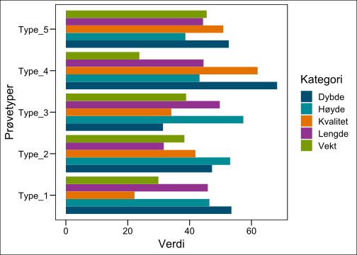

Effekter av arealbruk og arealbruksendringer på biodiversitet, økosystemtjenester og karbonlagrin i Norge
Et systematisk kart og beslutningsstøtteverktøy
Erlend B. Nilsen , Skriv in forfatter her , Skriv in forfatter her , Skriv in siste forfatter her
Siteres som:
Brum, O., Robin, K. 2016. En veldig bra titel. NINA Rapport 1234. Norsk institutt for naturforskning.
Kvalitetsgranskere: xx
Ansvarlig signatur: Forskningssjef [fylles ut av forskningssjefen] (sign.)
Sammendrag
Tekst inn her, et kort resymé av innholdet. Teksten i sammendraget er søkbar i databaser og på nett, og er viktig for at rapporten skal fanges opp ved søk.
Seksjoner og tomme rader mellom dem er litt tricky å få til i YAML-avsnittet, men det kan gjøres slik. Tomme rader i forordet kan også lages på samme måte.
Abstract
Tekst inn her, et kort resymé av innholdet. Teksten i sammendraget er søkbar i databaser og på nett, og er viktig for at rapporten skal fanges opp ved søk.
1 Innledning
Endring i arealbruk og landdekke (LULCC) anses å være den dominerende driveren av nylig tap av biodiversitet både globalt og i Norge, og påvirker direkte naturens evne til å tilby naturgoder og -tjenester (Díaz et al., 2019; Malhi et al., 2020). LULCC påvirker også et økosystems evne til å lagre og binde karbon i jord og biologisk materiale, og påvirker dermed direkte et økosystems evne til å bidra til å motvirke og tilpasse seg klimaendringer. Å kvantifisere, forstå og formidle dynamikken i arealendringer og deres effekter på biodiversitet, økosystemtjenester og karbonlagring er derfor en forutsetning for evidensbaserte arealbruksstrategier. Imidlertid mangler det for øyeblikket systematisk evidens om dette temaet fra norske økosystemer. Mye av den offentlige diskursen på nasjonalt nivå domineres av internasjonale globale kunnskapssammendrag, til tross for betydelig usikkerhet rundt nedskalering og overføring av kunnskap fra globale og regionale synteser til lokalt/nasjonalt nivå, på tvers av økosystemer og taksonomiske grupper. Tidligere kunnskapssammendrag basert på data fra norske økosystemer har enten fulgt spesifikke tilnærminger (f.eks. Økosystemvurdering; (Nybø et al., 2017)), i stor grad basert på ekspertvurderinger (Artsdatabanken, 2021), eller vært begrenset i omfang. Mangelen på en omfattende oversikt over forskningsbasert kunnskap fra norske økosystemer fører også til at ulike interessegrupper og sektorer stoler på ulike “fakta,” noe som ofte fører til eskalerende konflikter og dårlige beslutninger. Det er derfor et presserende behov både for en oppsummering av kunnskap og identifisering av reelle kunnskapshull.
Politikk og beslutningstaking knyttet til arealbruk og dens effekter på biodiversitet og klima er for øyeblikket blant de mest konfliktfylte og heftig debatterte politiske spørsmålene i Norge. Konfliktene involverer typisk dilemmaer mellom ulike samfunnsmessige bekymringer og interesser støttet av ulike sektorer og aktørgrupper (Guldbrandsen & Handberg, 2022; Skogen et al., 2021). Kunnskapskontrovers er også ofte en sentral egenskap ved konfliktene, og innebærer uenighet om kunnskapens status og motstridende kunnskapskrav om de miljømessige effektene av ulike alternativer for arealbruk (Aspøy & Stokland, 2022; Rusch et al., 2022). IPBES (2019, 2022a, 2022b) og IPCC (2018) har foreslått styringsmetoder og tiltak, slik som de knyttet til transformasjonsendringer og transformasjonsstyring, for å muliggjøre oppnåelsen av SDG-ene, grensen på 1,5°C og 2050-visjonen for biodiversitet. Slike tilnærminger involverer forbedret integrasjon og samhandling mellom samfunnsmessige mål, styringssektorer og flere kunnskapskilder, og er dermed svært relevante for norsk politikk og beslutningstaking knyttet til arealbruk. Imidlertid hindres utnyttelsen og tilpasningen av internasjonalt anbefalte tilnærminger og verktøy i en norsk kontekst for øyeblikket av mangelen på en omfattende forståelse av nasjonale og lokale dilemmaer og konflikter knyttet til arealbruk, samt de for tiden anvendte verktøyene og tilnærmingene. Det er derfor et presserende behov for en kunnskapssyntese og identifisering av kunnskapshull angående disse aspektene ved arealbruk og dens effekter på biodiversitet og klima.
Systematiske kart (også kjent som Evidenshullkart eller Evidenskart) ble designet for å gi en oversikt over tilgjengelig evidens om et bredt tema (Saran et al., 2020). De søker ikke å svare på smale, veldefinerte spørsmål (slik systematiske oversikter gjør), men heller å gi et middel til å identifisere og katalogisere tilgjengelig evidens om politisk relevante spørsmål (James et al., 2016). Systematiske kart har blitt realisert på en rekke ulike måter, men gir generelt resultatene på en brukervennlig måte, for eksempel ved hjelp av grafer, kart eller søkbare databaser (Miake-Lye et al., 2016). Interaktive plott og kartlegging blir i økende grad brukt for å gi en dynamisk utgang til brukerne (slik som EviAtlas; Haddaway et al., 2019). Det er viktig at systematiske kart ikke fremstilles som et mål i seg selv. Uten ytterligere evidenssyntese må beslutningstakere være forsiktige med å treffe beslutninger basert kun på evidensens vekt alene (dvs. stemmeoptelling, jf. (Hedges & Olkin, 1980)). Systematiske kart kan ikke erstatte rigoriteten til systematiske oversikter, men kan gi beslutningstakere forståelse av evidensgrunnlaget ved å belyse hull eller klynger av evidens. De kan vise hvor evidenssyntese kan finne sted (dvs. det er tilstrekkelig med tilgjengelig evidens for en systematisk oversikt) eller hvor primærforskning er nødvendig (dvs. det er mangel på evidens). Beslutningsmodeller kan supplere resultatene av en systematisk evidenssyntese for å plassere den tilgjengelige evidensen i beslutningskonteksten (Carrick et al., 2019).
1.1 Arealbruk og arealbruksendringer i Norge
TROND OG/ELLER ANDERS - KAN DERE SKRIVE HER OM AREALBRUK OG AREALBRUKSENDRINGER I NORGE DEN SISTE TIDEN (LITT USIKKER PÅ TIDSPERSPEKTIV, MEN TROLIG SISTE 100-50 ÅR).
1.2 Involvering av brukere og samfunnsaktører
The outline for the review was presented at a conference held by the Norwegian Environment Agency and the Norwegian Research Council October 23, 2022. A general stakeholder meeting was arranged by NINA on April 25, 2023. The focus and scope of the review was narrowed and better defined during a specific stakeholder event on #date. Details of this meeting and the modifications in scope are available on request. Stakeholders who attended this event were invited to comment on the draft protocol prior to submission for publication. Stakeholders were not engaged during the conduct of the review.
1.3 Formålet med kunnskapssammenstillingen
Hovedmålet med dette prosjektet er å gi en helhetlig oversikt over tilgjengelig kunnskap knyttet til effekter av arealbruk og arealbruksendringer på norsk natur, med fokus på biologisk mangfold, økosystemtjenester, klimatilpasning, karbonbinding og lagring. Kartet er begrenset i geografisk omfang til Norge, Sverige og Finland (se inklusjonskriterier nedenfor). Rapporten er dessuten ledsaget av et beslutningsstøtteverktøy som en utvidelse av det systematiske kartet for å kontekstualisere tilgjengelig kunnskap. Verktøyet er utformet som en konseptuell modell av kunnskapsfeltet og synliggjøre betydningen av kunnskapshull på ulike områder.
1.3.1 Hovedproblemstilling
Hovedspørsmålet i vårt systematiske kart er «Hvilke forskningsbasert kunnskap finnes knyttet til virkningene av arealbruk og endringer i arealbruk på biologisk mangfold, økosystemtjenester og karbonbinding i Norge, hvilken type konflikter er identifisert mellom ulike former for arealbruk, og hvilke verktøy foreslås for å forbedre styringen”.
1.3.2 Underproblemstillinger
Vi vil karakterisere den eksisterende litteraturen langs følgende akser:
Hvor stor andel av forskningen er basert på empiriske data?
Hvor stor andel av forskningen er basert på eksperimenter vs observasjonelle studier?
Hvor stor andel av forskningen er basert på kvalitative metoder vs kvantitative/blandete metoder?
Hvordan er forskningen fordelt over ulike økosystemer?
Hvordan er forskningen fordelt over ulike disipliner?
Hvordan er forskningen fordelt over ulike nivå av biologisk organisering?
Hva er de mest studerte formene for arealbruk og arealbruksendringer?
Hvilke regioner/fylker er mest representert i datamaterialet?
Hvor stor andel av forskningen fokuserer på governance, konfliker og verktøy?
What are the dominant types of land use that are investigated?
Hva er de dominante analytiske tilnærmingene for samfunnsvitenskapelige studier?
Hvilke aktører er hyppigst representert i forskningen?
Hvilke sektorer og samfunnsmessige områder er hyppigst studert?
Which level of societal scale do the studies represent?
Which land use conflicts are most researched?
Which tools are proposed and investigated?
2 Metoder
Før prosjektet ble gjennomført ble det uviklet en detaljert protokoll som beskriver gjennomføringen. Denne protokollen inkluderte en detlajert beskrivelse av:
Søkestrenger, søkeord og språk
Eventuelle supplerende søk som f.eks. «citation chasing»
Hvilke databaser vi vil søke i, og eventuelle nettsteder for søk etter grå litteratur som ikke er tilgjengelig i databasene
Sentrale artikler (benchmark-artikler) som søket forventes å plukke opp
Kriterier for screening av artikler (inkludering/ekskluderings-kriterier)
Prosedyrer for sjekk av konsistens mellom review-personellet
Regler for datakoding
Versjon 1.0 av protokollen ble uviklet på et tidlig prosjektstadie, og sirkulert til en utvidet prosjektgruppe og til utvalgte samfunnsaktører. Basert på tilbakemeldinger på denne versjonen ble en ny versjon av protokollen utarbeidet og publisert. Videre justeringer av protokollen har blitt gjennomført på screening- og koding-stadiet av prosjektet. Alle versjoner er publisert åpent på Open Science Framework, og alle versjoner er versjonert og datert. En oversikt over protokollene kan finnes her https://osf.io/mwapc/. Den enelige versjonen av protokollen kan leses her (ref).
2.1 Avvik fra protokollen
Erlend skriver her…
2.2 Søk etter litteratur
2.2.1 Søk i online databaser
Systematiske litteratursøk for akademisk (forskningsbasert) litteratur ble gjennomført i Scopus og i følgende Web of Science Core Collection databaser:
Science Citation Index Expanded (SCI-EXPANDED): 1987–dd.
Social Sciences Citation Index (SSCI): 1987–dd.
Arts and Humanities Citation Index (AHCI): 1987–dd.
Emerging Sources Citation Index (ESCI): 2015–dd.
Det ble gjennomført en rekke preliminære søk i Web of Science, og disse ble benyttet til å fintune søkestrengen (ref protokollen).
2.2.2 Søketermer og søkestreng
I vår søkestrategi benyttet vi oss av PICO-rammeverket (James et al., 2016) for å strukturere søket, og sørge for at det var dekkende for vårt primære forskningsspørsmål.
Følgende søkestreng ble benyttet i WoS (tilsvarende streng ble benyttet i Scopus, men her ble søket justert for å passe systemets interface):
TS=(“land use” OR “land cover” OR “space use” OR LULCC OR (planning AND (spati* OR region* OR area* OR conservation OR land* OR urban)) OR (conversion AND (land* OR habitat* OR area* OR ecosystem* OR natur)) OR (change NEAR/3 (land* OR area)) OR “national park” OR landscape* OR habitat* OR Husbandry OR “land shar” OR “land spar” OR (Outdoor NEAR/3 (life OR livin* OR recreat)) OR (restoration AND (nature OR ecosystem)) OR forestry OR (reindeer NEAR/3 (herd* OR husbandr)) OR (livestock NEAR/3 graz) OR “holiday home” OR “secondary home”OR (recreation* NEAR/3 (home* OR cottage* OR cabin* OR propert)) OR tourism OR “wind power” OR “Land manag” OR “Nature conservation” OR ((governance OR management) AND (spati* OR region* OR area* OR conservation OR land* OR urban)) OR aquaculture OR “fish farm” OR hydropower OR “green energy” OR “energy development” OR herding OR agriculture OR transportation OR road OR “oil and gas” OR petroleum OR mining OR windpower OR traffic OR road* OR railway* OR “hydroelectric power” OR “solar power” OR “solar electricity” OR “power plant” OR LULC OR LULUCF OR AFOLU OR FOLU)
AND
TS=(sustainab* OR biodiversity OR “Ecosystem service” OR (carbon NEAR/3 (stor OR sequest)) OR (ecosystem NEAR/3 (impact* OR effect* OR provision* OR regulat* OR support* OR cultur)) OR ((loss OR shrink OR bisection* OR perforation OR fragmentation) AND (habitat OR land)) OR (climate NEAR/3 adapt) OR ecodiversity OR “ecosystem type” OR “ecological process” OR anthropogenic OR conflict OR (diversity NEAR/3 (ecological OR speci* OR population*)) OR red-list OR “water purification” OR “soil retention” OR spiritual OR cultural OR aesthetics OR “climate mitigation”)
We screened all systematic reviews and systematic maps from the international literature, the two categories were combined with TS=(“Systematic review” OR ”systematic map” OR “rapid review*”). For the primary literature, the two categories were combined with TS=(Norway OR Norwegian OR Sweden OR Swedish OR Finland OR Finnish), and all results screened.
2.2.3 Test av søkets omfang og dekning
For å sørge for at søket ga en god dekning av den aktuelle litteraturen valgte vi ut 15 benchmark-artikler, og undersøkte hvor godt disse ble fanget opp av søket. Artiklene ble valgt ut gjennom en diskusjon i prosjektgruppa, med det formål å dekke både bredde og dybde i søket. I det enedelig søket ble totalt 13 av de 15 artiklene fanget opp.
De 15 benchmark-artiklene var som følger:
Aune, S., Bryn, A. & Hovstad, K.A. 2018. Loss of semi-natural grassland in a boreal landscape: impacts of agricultural intensification and abandonment. Journal of Land Use Science 13(4): 375-390. https://doi.org/10.1080/1747423x.2018.1539779
Bouyer, Y., Martin, G.S., Poncin, P., Beudels-Jamar, R.C., Odden, J. & Linnell, J.D.C. 2015. Eurasian lynx habitat selection in human-modified landscape in Norway: Effects of different human habitat modifications and behavioral states. Biological Conservation 191: 291-299. https://doi.org/10.1016/j.biocon.2015.07.007
Dorber, M., May, R. & Verones, F. 2018. Modeling Net Land Occupation of Hydropower Reservoirs in Norway for Use in Life Cycle Assessment. Environmental Science & Technology 52(4): 2375-2384. https://doi.org/10.1021/acs.est.7b05125
Foldvik, A., Einum, S., Finstad, A.G. & Ugedal, O. 2017. Linking watershed and microhabitat characteristics: effects on production of Atlantic salmonids (Salmo salar and Salmo trutta). Ecology of Freshwater Fish 26(2): 260-270. https://doi.org/10.1111/eff.12272
Gundersen, V., Vistad, O.I., Panzacchi, M., Strand, O. & van Moorter, B. 2019. Large-scale segregation of tourists and wild reindeer in three Norwegian national parks: Management implications. Tourism Management 75: 22-33. https://doi.org/10.1016/j.tourman.2019.04.017
Hamre, L.N., Domaas, S.T., Austad, I. & Rydgren, K. 2007. Land-cover and structural changes in a western Norwegian cultural landscape since 1865, based on an old cadastral map and a field survey. Landscape Ecology 22(10): 1563-1574. https://doi.org/10.1007/s10980-007-9154-y
Hamre, L.N., Rydgren, K., Incerti, C., Hjorth-Johansen, I. & Simonsen, K.S. 2021. Paradise lost - transformation of the gully landscape in South-East Norway. Landscape Research 46(3): 377-389. https://doi.org/10.1080/01426397.2020.1847263
Jarnemo, A., Minderman, J., Bunnefeld, N., Zidar, J. & Månsson, J. 2014. Managing landscapes for multiple objectives: alternative forage can reduce the conflict between deer and forestry. Ecosphere 5(8): 14. https://doi.org/10.1890/es14-00106.1
Karlsson, J., Byström, P., Ask, J., Ask, P., Persson, L. & Jansson, M. 2009. Light limitation of nutrient-poor lake ecosystems. Nature 460(7254): 506-U80. https://doi.org/10.1038/nature08179
Korsnes, M., Loewen, B., Dale, R.F., Steen, M. & Skjolsvold, T.M. 2023. Paradoxes of Norway’s energy transition: controversies and justice. Climate Policy: 23(9): 1132-1150. https://doi.org/10.1080/14693062.2023.2169238
Pedersen, C. & Krogli, S.O. 2017. The effect of land type diversity and spatial heterogeneity on farmland birds in Norway. Ecological Indicators 75: 155-163. https://doi.org/10.1016/j.ecolind.2016.12.030
Rolstad, J., Blanck, Y.L. & Storaunet, K.O. 2017. Fire history in a western Fennoscandian boreal forest as influenced by human land use and climate. Ecological Monographs 87(2): 219-245. https://doi.org/10.1002/ecm.1244
Rusch, G.M., Bartlett, J., Kyrkjeeide, M.O., Lein, U., Norden, J., Sandvik, H. & Stokland, H. 2022. A joint climate and nature cure: A transformative change perspective. Ambio 51(6): 1459-1473. https://doi.org/10.1007/s13280-021-01679-8
Skogen, K., Mauz, I. & Krange, O. 2008. Cry wolf! Narratives of wolf recovery in France and Norway. Rural Sociology 73(1): 105-133. https://doi.org/10.1526/003601108783575916
Tombre, I.M., Eythórsson, E. & Madsen, J. 2013. Towards a Solution to the Goose-Agriculture Conflict in North Norway, 1988-2012: The Interplay between Policy, Stakeholder Influence and Goose Population Dynamics. Plos One 8(8): e71912. https://doi.org/10.1371/journal.pone.0071912
2.2.4 Ytterligere søk etter litteratur
Artikler som er sitert av eller siterer (engelsk: forward and backward citation chasing) de 15 benchmark-artiklene ble søkt ved hjelp av verktøyet citationchaser i R (Haddaway et al. 2022).
2.2.5
2.2.6 Sammenstilling og håndtering av søkeresultater
Søkeresultater, inkludert listen over benchmarks og “citation chasing” resultater, ble lastet ned som .RIS-filer. Studier ble de-duplisert basert på DOI og tittelmatcher ved å bruke R-pakken ‘ASySD’ (Hair et al. 2021). Vi beholdt den nyeste versjonen av alle versjonskontrollerte artikler (for eksempel ble publiserte versjoner av forhåndstrykk beholdt). De-dupliserte artikler ble deretter lastet opp til RayyanAI for å lette screening. Artikler som besto sammendragsscreeningsstadiet ble deretter eksportert til en delt Zotero-database, og pdf-versjoner ble søkt etter ved hjelp av Zoteros pdf-søkeverktøy. Eventuelle artikler uten pdf-er ble søkt manuelt på ResearchGate eller på tidsskriftsnettsteder. Der hvor pdf-er ikke var tilgjengelige, ble de bedt om fra forfatterne. Beslutninger om eksklusjonsårsaker på fulltekststadiet ble registrert i Notes-verktøyet i Zotero. Koding fant sted ved bruk av et “google-form” som automatisk fylte ut et “googlesheet” som dannet databasen over inkluderte studier.
2.2.7 Screening av artikler
Vi brukte forhåndsdefinerte inklusjons-/eksklusjonskriterier for å screene kvalifiserte studier. Inkluderte studier ble de-duplisert basert på DOI og tittelmatcher ved å bruke R-pakken ‘ASySD’ (Hair et al. 2021). Vi beholdt den nyeste versjonen av alle versjonskontrollerte artikler (for eksempel ble publiserte versjoner av forhåndstrykk beholdt).
Etter de-duplisering ble tittel og abstrakt screening utført ved å bruke kvalifikasjonskriteriene, og alle studier klassifisert som usikre ble vurdert på fulltekststadiet. Screeningen ble gjort ved hjelp av Rayyan, med dobbel screening av en primær og flere sekundære anmeldere. Etter 50 inkluderings-/ekskluderingsbeslutninger brukte vi Rayyan-AI 5-stjerners rangering for å rangere sammendragene for vurdering. Denne algoritmen vurderer sammendrag og titler ved hjelp av naturlig språkbehandling for å identifisere poster som har et høyt potensial for inkludering (5 stjerner) eller de med et lavere potensial (1 stjerne).
Ukentlig overvåking ble utført for gruppeuenighetsrater, og kvalifikasjonskriteriene ble revurdert og justert når frekvensen oversteg 15 %. Motstridende beslutninger ble avstemt gjennom diskusjoner med hele gjennomgangsgruppen. Studier merket som usikre på hvert trinn ble vurdert på neste nivå, med de som var merket som usikre gjennomgått av hele teamet.
2.3 Inkluderings- og ekskluderingskriterier
We reviewed the collated studies obtained from the searches using the criteria set below. Only studies conducted in Norway, Sweden and Finland or systematic reviews (also referred to as meta-analyses) with global, European or Fennoscandian coverage were included in the review. Only records where the full-text is written in English, Norwegian, Swedish, or Danish were considered eligible.
Studies will be eligible if they assess land use or land-use-change effects on the biodiversity, ecosystem services/functions or carbon sequestration and storage in Feno-Scandinavia. Only studies that focus on terrestrial, aquatic or coastal areas are include (i.e. studies focusing on marine systems are excluded).
Studies will also be eligible if they assess conflicts, tools or governance relating to land use and cover change its effects on biodiversity, ecosystem services and/or carbon sequestration and storage by ecosystems in Fenno-Scandinavia. The relation should be explicit in study for the record to be included.
Studies of all scales (national, regional, and local) will be considered eligible.
2.3.1 Eligible interventions
Land use and/or land cover change through one or multiple drivers (see Appendix) which are anthropogenic in origin and result in one or more of the core mechanisms (change in habitat – amount; habitat composition; habitat structure; habitat – function; indirect, e.g. changed human use in recreation etc).
2.3.2 Eligible outcomes
Eligible outcomes will include function, structure, diversity, abundance, behaviour, composition, or richness in any level of biological organisation (genetic, species, community, ecosystem, landscape – multiple ecosystems), as well as studies focusing on the amount of, diversity or category of ecosystem services (provisioning, regulating, supporting or cultural service and, carbon storage and sequestration).
In addition, studies within the social sciences will be included if they explicitly address conflicts, tools and governance pertaining to effects land use and land cover change on biodiversity, ecosystem services and/or carbon sequestration and storage.
2.3.3 Eligible types of study design
All study designs will be considered eligible, including both quantitative and qualitative studies.
2.4 Study validity assessment
Matt write here
2.5 Data coding strategy
For all papers that met the eligibility criteria and were included in the review, we extracted key properties and characteristics for later data analysis. A sample of 15 papers were coded by all reviewers, to quantify disagreement in coding. Criterion for coding is provided in Appendix 3. ‘Meta data’ included basic properties for each study, such as author names, journal/report, series, study length and years. The remaining categories included information about open science, geographical, environmental and spatial context, research type and context, taxonomic context, type of land use and land use change, outcomes and impacted measures, governance impacts and tools.
2.6 Data mapping method
Matt write here
3 Resultater
3.1 Results of the search for literature
3.1.1 Sources and document types of included articles
R-kod kan legges til på vanlig vis. Fargemønstret kan endres gjennom highlight: xxx Yaml-avsnittet i starten på dokumentet.
# Slik vises kode-kommentarer
x <- 1:10 * 0.5 + rnorm(10, mean = 1, sd = 2)
y <- 1:10Quarto er så kalt “kodespråk-agnostisk” og andre programmeringspråk kan brukes. For eksempel Bash:
for (( n=1; n<=5; n++ ))
do
echo "Rad $n"
doneRad 1
Rad 2
Rad 3
Rad 4
Rad 5Eller Python, som dette skript for å finne primtal:
lower = 1
upper = 20
for num in range(lower, upper + 1):
if num > 1:
for i in range(2, num):
if (num % i) == 0:
break
else:
print(num)2
3
5
7
11
13
17
19Tabeller fra R kan lages gjennom pakken xtable, kable eller DT::datatable, avhengig output-format. Her er et eksempel på en tabell med modellestimat fra en enkel modell. Vi quarto-variabler for å skifte mellom tabellformat, avhengig hvilken output-format vi renderer. Dette trengs ikke hvis man kun skal lage et format. Man kan også referere til en tabell, for eksempel referer jeg nå til Tabell 1.
mod1 <- glm(y ~ x)
to_table <- round(summary(mod1)$coefficients, 3)
if (names(rmarkdown::metadata$format) == "ninareport-pdf") {
xtable(to_table, caption = "Tabell laget med xtable.")
} else if (names(rmarkdown::metadata$format) == "ninareport-html") {
DT::datatable(to_table, caption = "Tabell laget med xtable.",
style = "bootstrap", options = list(pageLength = 10,
autoWidth = TRUE, columnDefs = list(list(width = "100px",
targets = 1))))
} else {
knitr::kable(to_table, caption = "Tabell laget med xtable.")
}Figurer fungerer på vanlig vis. Figurtekst og “etikett” som man kan referere til skrives som quarto-kommentarer i kod-blokken. Figur 1 viser et eksempel på bruk av NINAs logofarger via funksjonen NinaR::NinaPalette.
plot.mat <- matrix(rnorm(25, 40, sd = 10), ncol = 5,
dimnames = list(c("Sportsfisker", "Elveeier", "Oppleid",
"Fisket", "Poseidon"), c("Lakselus", "Utsetting",
" Strengere restriksjoner", "Fysiske tiltak",
"Flaks")))
plot.mat <- tibble::tibble(Verdi = rnorm(n = 25, mean = 40,
sd = 10), Prøvetyper = rep(c("Type_1", "Type_2",
"Type_3", "Type_4", "Type_5"), each = 5), Kategori = rep(c("Lengde",
"Høyde", "Dybde", "Vekt", "Kvalitet"), times = 5))
ggplot(plot.mat) + geom_bar(aes(x = Verdi, y = Prøvetyper,
fill = Kategori), stat = "identity", position = "dodge") +
scale_fill_nina()

Eksisterende bilder kan også legges til gjennom vanlig markdown syntax. Disse blir sentrerte. Noter at eps-filer angis uten filendelse.

Hvis man trenger flere muligheter for definisjon av størrelse og plassering på en ferdig bilde, kan man også inkludere den med “include_graphics”.
Vi kan også referere til bilder, for eksempel til Figur 2, som er inkludert i mallen. Man kan referere til seksjoner ved å angi en referanse i headingen {#seksjon}. For eksempel refererer jeg nå til innledningen i Kapittel 1.